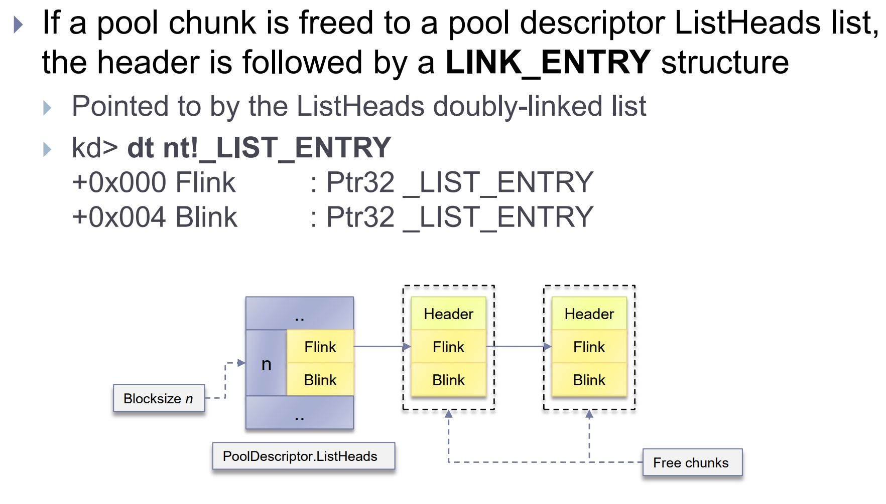
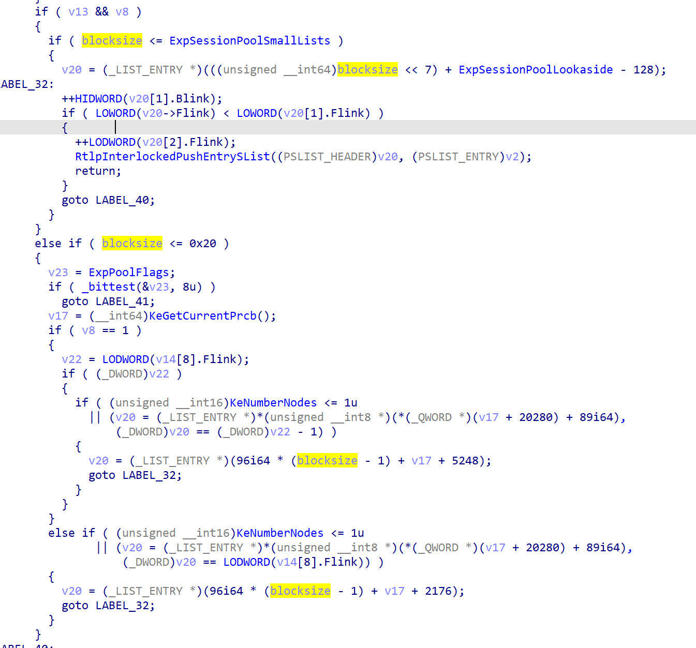
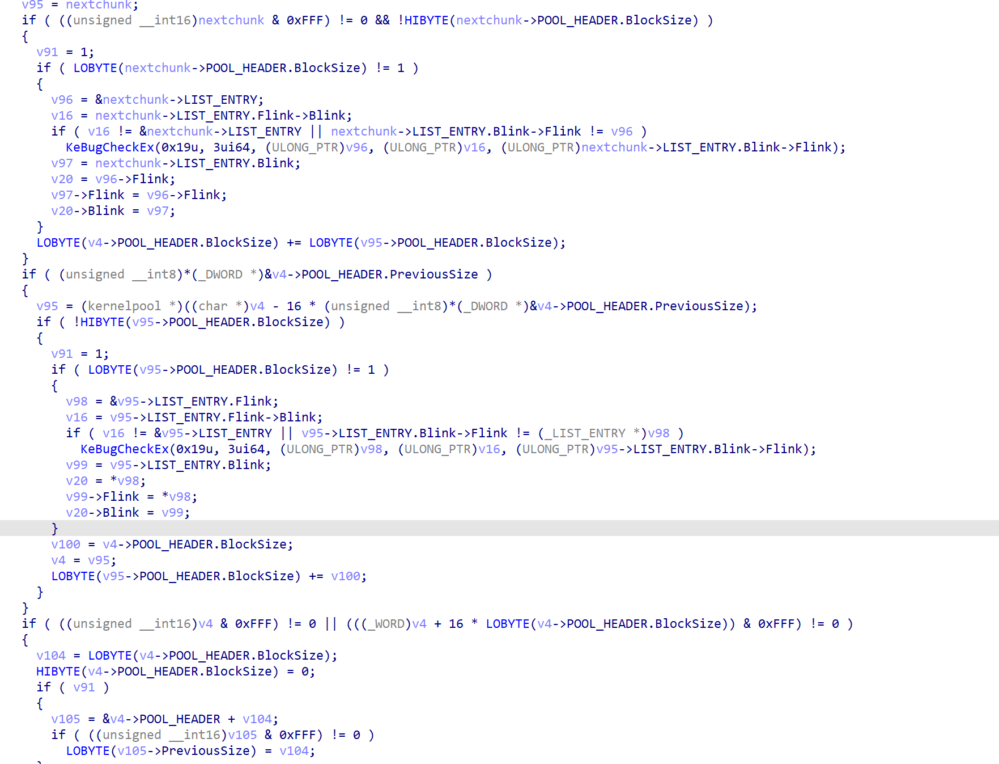

win7 kernel pool exploitation
读书笔记
具体看Tarjei Mandt的slides
因为工作需要，对win7的内核漏洞利用需要了解下。
Kernel Pool Internals
池描述符
1 | |
用于管理内核堆块，负责记录在使用中的堆块数目等其他与堆块相关的信息。
PendingFrees指向延迟释放列表，是一个单项链表存放等待呗释放的堆块。
ListHeads是一个双向链表，链接相同大小的被释放块。每个单位占8字节。被free的chunk进入listheads时会根据block size来计算下标，计算方式就是乘8除8然后四舍五入，BlockSize = (NumberOfBytes+0xF) >> 3。进行这些操作是为了给pool header预留空间
1 | |
pool header存放了用于内存释放和分配算法必要的信息，比如PreviousSize表示前一个堆块的大小，可以用于定位前一个堆块，在合并堆块的时候。如果该堆块位于页的开头，这个可以为0.
poolindex表示下标，用来确保被释放到正确的index处。
pooltype表示堆块类型（paged nopaged等）同时也表明是否free，free的chunk会置0，否则置为POOL_TYPE or pool-in-use
1 | |
pool-in-use在vista及之后版本是2，在xp和2003上是4
例,在win7上 使用中的paged pool chunk
PoolType = PagedPool|2 = 3
如果chunk被free了并且加入ListHeads链表，poolheader下面就是LIST_ENTRY，因为这个原因，block size为8字节的chunk不被listheads维护，因为size不够放LIST_ENTRY。
1 | |
_LIST_ENTRY用于吧chunk加入双向链表。以前内存破坏类的漏洞利用不管是在用户态还是在内核态都是用类似的方法，”write-4” exploitation。简单来说就是覆盖list，然后可以达成任意地址分配内存，类似linux中的pwn。
对于小堆块，内核用lookaside单向链表来实现快速分配和释放 (LIFO方式)。这设计主要是用于cpu密集型，并用了原子操作来进行add和remove entries的操作。为了更好的使用cpu缓存lookaside lists在每个处理器的kpcrb中定义
1 | |
分页和非分页的lookaside list都在里面定义了。
固定且经常使用的大小会在PPLookasideList中，这是个特殊的专用的lookaside list
对于非分页和分页的lookaside lists，最大的块大小为0x20，因此每个类型的有32种。每个列表由GENERAL LOOKASIDE POOL 定义
1 | |
SingleListHead.Next指向第一个被free的chunk，链表大小被Depth限制平衡管理器会定期调整，根据内存页的命中率，所以一个经常被访问的lookaside list的Depth值会很大，Depth初始值为4 (nt!ExMinimumLookasideDepth)，最大为256，如果lookaside list满了，pool chunk会被分配到合适的listheads里去。
session pool也有lookaside lists，paged session pool分配，使用单独的lookaside lists(nt!ExpSessionPoolLookaside)每个列表block size最大为0x19，由 nt!ExpSessionPoolSmallLists设置。session pool的lookaside list同样用了上述GENERAL LOOKASIDE POOL结构体，但是有了额外的填充。对于非分页的session pool，使用的lookaside lists和非分页内存的一样。
lookaside lists在hot/cold page separation pool flag 被设置为 (nt!ExpPoolFlags & 0x100).会被禁用。
下面讲下large pool的分配。其实打过pwn的入门这玩意并没多大困难，很多思想都是一样的。
池描述符里的ListHeads维护的大小都小于一个页。当分配大小超过4080字节时会使用nt!ExpAllocateBigPool来处理，这和函数会继续调用nt!MiAllocatePoolPages,他将四舍五入计算size到最近的页大小。一个有着1 block size和0presize的large pool会被立刻分配。large pool分配完后，多余的内存会被插入到合适的池描述符ListHeads最后
关于numa
非统一内存访问（NUMA）是一种用于多处理器的电脑内存体设计，内存访问时间取决于处理器的内存位置。 在NUMA下，处理器访问它自己的本地存储器的速度比非本地存储器（存储器的地方到另一个处理器之间共享的处理器或存储器）快一些。
处理器和内存被分组在一个叫做节点的单元中，结构体定义如下
1 | |
每个节点都由四个lookaside单向链表。这个链表主要服务于那些经常被访问的内存（计数器大）
对于分页内存，每个节点定义了一个lookaside list (PagedPoolSListHead)
对于非分页内存，定义了三个 (NonPagedPoolSListHead[3])
lookaside list的大小由系统的物理内存决定。
如果lookaside list不能用，就会使用比特位图allocation bitmap（RTL BITMAP），每个位都表示了当前大小的页是否在使用。
pagedpool中的bitmap在nt!MmPagedPoolInfo指向的MM_PAGED_POOL_INFO中定义
non-pagedpool中的bitmap在nt!MiNonPagedPoolBitMap指向结构体中定义
session pool的在MM_SESSION_SPACE结构体中定义。
对于大多数large pool的分配 nt!ExAllocatePoolWithTag需要提供额外4字节(64位下是8字节)来存放size（位于pool body最后），当free时(ExFreePoolWithTag)该值会被检查来防止pool overflow。
Allocation/Free Algorithm
关于ExAllocatePoolWithTag
先访问lookaside lists没有就ListHeads lists如果还没有就会像分配器请求一个页.
如果是large pool，操作系统为了减少内存碎片，另一部分块取决于页面位置，如果页面对其，就会从前一个页来分配，否则从后面分配，无论是哪种方式，剩下的内存都会被放入ListHeads链表尾部。
1 | |
关于ExFreePoolWithTag
主要操作是吧free的chunk放到正确的list中，同时操作系统为了减少内存碎片会判断周围的堆块是否空闲，如空闲进行合并操作。伪代码如下
1 | |
DELAY_FREE标志（nt!ExpPoolFlags & 0x200）可以优化几个堆块的分配与释放。如果可用的物理内存(nt!MmNumberOfPhysicalPages)大于等于0x1fc00.每一次调用ExFreePoolWithTag都会要释放的堆块放到PendingFrees列表中，具体到每个池描述符。如果列表有32个或者更多的chunk(determined by PendingFreeDepth)，他将调用ExDeferredFreePool，这个函数会遍历然后把所有的chunk释放到适当的ListHeads列表中。
1 | |
关于64位
//AMD64/x64 Kernel Pool Changes
除了支持更大的物理内存。64位下的windows kernel pool和32位并没有太大区别。
主要还是一些结构体成员大小的变化，如指针大小还有block size扩大到16字节计算方式同样改变
s BlockSize = (NumberOfBytes+0x1F) >> 4
对应的pool header也改变了。
1 | |
因为block size大小的改变，PreviousSize和BlockSize都减小到了8bits即1字节,ListHeads有256个双向链表数组而不是像x86上是512个。这也允许给PoolIndex额外分配一个比特位，因此64位下支持256节点(池描述符)，而不是像x86下的128个。另外pool header也扩大到16字节并且包括了ProcessBilled指针用于定位是那个进程使用的这个内存。在32位下这个指针存储与pool body的最后四个字节。
conclusion
内核池分配几种类型，都定义在POOL_TYPE中(Non-Paged Pools, Paged Pools, Session Pools, etc)
每种内核池都有一个描述符（POOL_DESCRIPTOR）用来记录分配/释放的块数目，正在使用中的页等等。还维护了一系列的chunks。
Non-Paged Pool
非分页内存的数目被记录在nt!ExpNumberOfNonPagedPools，在单核操作系统中，nt!PoolVector的第一个下标指向了non-paged pool的描述符
kd> dt nt!_POOL_DESCRIPTOR poi(nt!PoolVector)
在多核系统下每个核对应的node都有他自己的非分页内存描述符，由nt!ExpNonPagedPoolDescriptor数组里的指针指向。
Paged Pool
分页内存的数目被记录在nt!ExpNumberOfPagedPools，在单核操作系统中，4个paged pool描述符被定义在nt!ExpPagedPoolDescriptor的1至4下标（Index 1 through 4 in nt!ExpPagedPoolDescriptor）
在多核系统下每个核对应的node都有一个分页内存描述符
nt!ExpPagedPoolDescriptor下标为0处是额外的分页描述符为了定义prototype pools / full page allocations
Session Paged Pool
每个用户的都不一样，由nt!MiInitializeSessionPool来初始化。
win7下池描述符指向如下
KTHREAD->Process->Session.PagedPool
Non-paged session由全局的non-paged pool来分配
Pool Descriptor Free Lists (x86)
这边一部分作者应该是写错了
照这个算法 (4080+0xf)>>3确实是511
但是8和24对应的下标应该是2和4而不是1，3.
这个0xf其实就是为了给header留空间并8字节对齐。
Kernel Pool Header (x86)
1 | |
PreviousSize:BlockSize of the preceding chunk
PoolIndex:Index into the associated pool descriptor array
BlockSize: (NumberOfBytes+0xF) >> 3
PoolType: Free=0, Allocated=(PoolType|2)
PoolTag: 4 printable characters identifying the code responsible for the allocation
Kernel Pool Header (x64)
1 | |
BlockSize: (NumberOfBytes+0x1F) >> 4
ProcessBilled: Pointer to process object charged for the pool allocation (used in quota management)
64位变化就三个分别是BlockSize计算方式,多了个eprocess指向分配改内存的进程，256 ListHeads entries。
Free Pool Chunks

Lookaside Lists
为了更快的分配/释放小内存
单向链表 LIFO
为性能做了优化 即没有检查
每个处理器都有他的lookaside lists(for pagable and non-pagable allocations)
定义在KPCRB中
最大BlockSize是0x20即256字节
按照8字节递增，所以每种list有32个
这边的256字节是已经算上了head的256字节所以是0x20
GENERAL_LOOKASIDE_POOL定义了每个lookaside list
Session的忽略，暂不考虑。
Large Pool Allocations
分配大小超过4080字节
由nt!ExpAllocateBigPool来处理
间接调用nt!MiAllocatePoolPages
请求的大小会被四舍五入到最接近页的大小
请求剩下的空闲块会被放到对应的池描述符的ListHeads链表里
每个处理器都有四个lookaside lists单向链表，为了big pool allocation而准备
1个是为了分页内存
3个是为非分页
都定义在KNODE (KPCR.PrcbData.ParentNode)中
如果lookaside lists被ban操作系统就会使用bitmap来获取需要的页
每个bit位都表示了正在使用的页
由RTL_BITMAP定义
Allocation Algorithm
顺序如下
Lookaside list(s) > ListHeads list(s) > Pool page allocator
win7在取出一个free chunk后会进行unlink操作
简单来说就检查前一个chunk的flink和后一个chunk的blink是否正确指向了需要被ulink的chunk
伪代码如下这边直接贴原图了
如果从ListHeads[n]中返回的chunk大小比需求的大，就会进行分割。
如果是在页开头即prevsize=0的，那么就会返回chunk头部
否则返回尾部
剩下的chunk会放在ListHeads[n]的末尾
Free Algorithm
free算法会检查pool header并把它释放到正确的list，为了减少内存碎片连续的free chunks可能会被合并。
ExFreePoolWithTag流程如下
合并流程如下
可以注意的是，free过程中如果chunk不在页开头回去检测next chunk的prevsize，当出现前几个字节不可控的池溢出时可以把chunk布局到页末尾来防止bsod。
Delayed Pool Frees
延迟释放机制是为了快速分配/释放而设计的
当MmNumberOfPhysicalPages >= 0x1fc00就会启用
Equivalent to 508 MBs of RAM on IA-32 and AMD64
nt!ExpPoolFlags & 0x200
每一次调用ExFreePoolWithTag都会在延迟释放链表（单向链表）中增加一个chunk
Current number of entries is given by PendingFreeDepth
The list is processed by the function ExDeferredFreePool if it has 32 or more entries
函数流程如下
ExAllocatePoolWithTag(x64)
ida7.5反编译的代码丑的一
有很多结构体还需要自己设置，最重要的还是最后的unlink实现，前面了解下逻辑就够了。
验证size是否>0xfe0，32位下是ff0，因为俩个blocksize的算法不一样，64位下是bytes+0x1f，32位是+0xf所以这边验证是否大于0xfe0
然后判断是否按照页对其和大小是否超过一个页来进行对应的分配

然后判断pooltype是否为paged pool，计算blocksize来选择对应的lookaside lists
nonpagedpool情况如上
如果blocksize>0x20
下面就会进行listheads遍历
关于safe unlink操作如下
unlink后会验证blocksize和待分配的是否相等是否页对齐来判断是否需要进行一个split entry操作
ExFreePoolWithTag(x64)
判断nextchunk的prevsize是否与blocksize相等
下面是根据pooltype和blocksize来选择合适的lookaside list

然后是DELAY_FREE pool标志判断然后进行相应的操作
后面紧跟着的是merge操作

merge完后会判断是否为整页如果是的话直接调用MiFreePoolPages否则添加到listheads list中去
Kernel Pool Attacks
下面讲解几种常用的攻击方式
Traditional ListEntry Attacks (< Windows 7)
win7前在进行unlink时并不会进行check来验证flin和blink是否合规
上面俩种覆写ListHeads都可以间接修改chunk的大小，导致内存重叠，然后完全可控。
ListEntry Flink Overwrite
win7使用了safe unlink来验证LIST_ENTRY的指针是否合规，但是他不会验证flink
构造一个chunk，这种利用对ListHeads[n]有要求就是chunk数目不小于2
//原因很简单，如果只有一个，在进行构造fakeentry后 listentry的blink不会改变，下一次过不了check
//为了防止蓝屏可以让指向的fakeentry的flink指向listentry本身，没试验过理论上应该可行
进行unlink后
ListHeads[n].Flink = FakeEntry
FakeEntry.Blink = ListHeads[n]
FakeEntry可控，利用方式就是写个用户态地址，这样下一次分配就会在我们可控的地址。
Lookaside Pointer Overwrite
chunk被放入lookaside lists条件
1 | |
因为lookasde lists是个单向链表，覆写就可以达到任意地址分配。
页被放入lookaside lists条件
1 | |
A pointer overwrite of lookaside pages requires at most a pointer-wide overflow
因为free pool pages没有pool header
PendingFrees Pointer Overwrite
延迟释放链表也是单向链表
和上一种攻击方式类似，覆写flink为用户态地址，用户态地址可控。
然后构造的fake chunk链表里next pointer必须是null来表明这个单向链表结束。

步骤
1 | |
PoolIndex Overwrite
这个相对来说复杂了很多
PoolIndex代表了chunk在对应池描述符里的下标
打法需要借助0页，64位下已经不能了分配0页了，因为这个slides比较老11年的，这边就不写了。
Quota Process Pointer Overwrite
这种利用在实战的时候不经常用（我不常用，当然上报漏洞可以），除非数据完全可控，因为实战情况下往往不一定数据完全可控，会造成一定程度的内存破坏，需要进行修复，否则进程退出就蓝屏。
这种攻击方式可以达成任意地址减一。对修复不太友好。
利用方式很好理解，当chunk被free时会根据eprocess找到对应的引用技术进行-1操作。覆写eprocess为用户态地址即可，然后可达成任意地址-1，64位和32位有一些区别。

用户态伪造eprocess然后把EPROCESS_QUOTA_BLOCK处指向需要-1的地址
一般减1的地址会选择权限处，具体有点忘了，然后通过注入system权限进程启cmd达成提权。
Summary of Attacks
1 | |